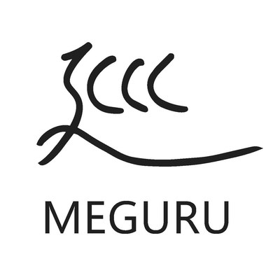
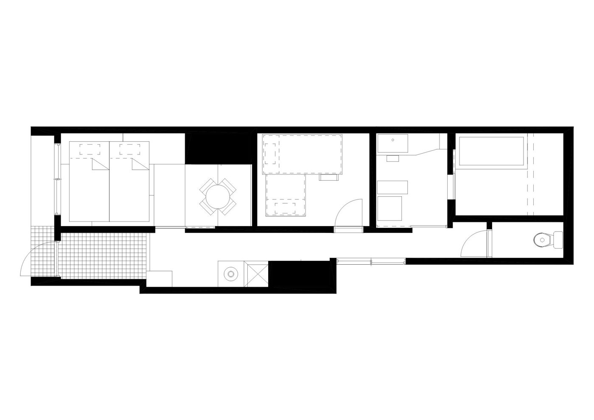
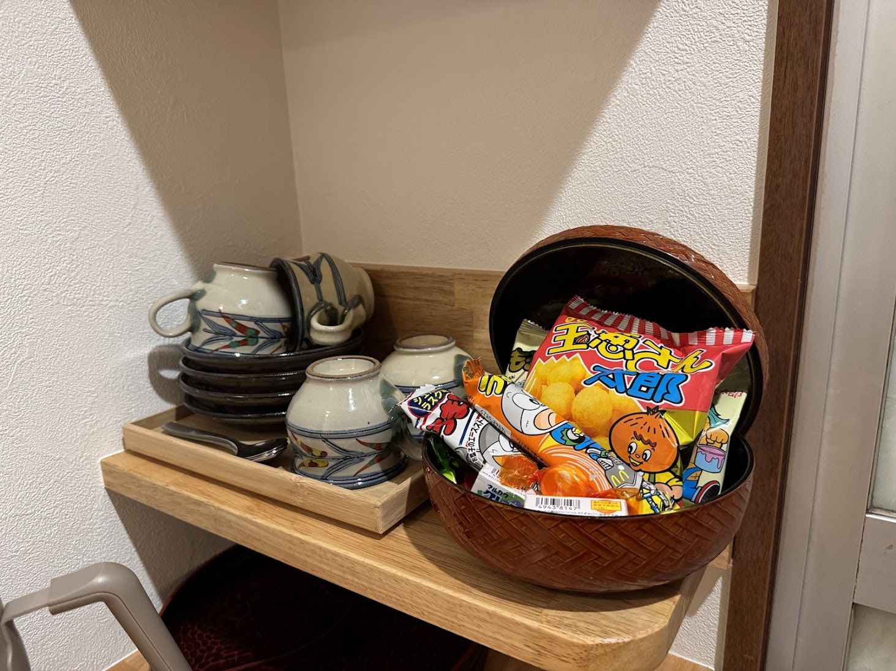
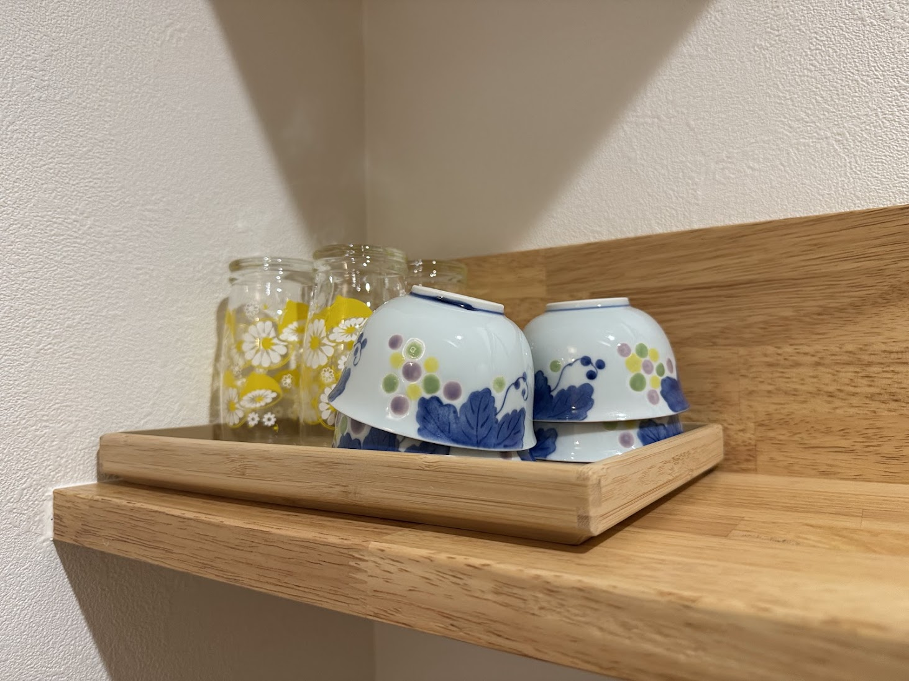
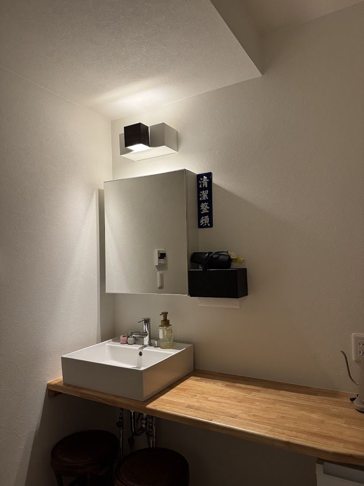
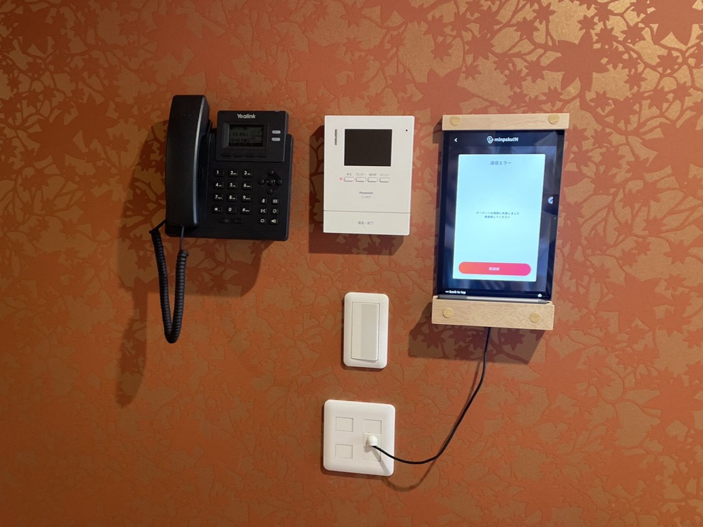

01
현관·복도
아지로 엮음 천장과 헤링본 바닥.
오래된 항아리와 주홍빛 벽지가, 안쪽으로 이끈다.

도쿄, 오사카, 교토.
이미, 당신은 알고 있다.
그렇다면 다음의 일본으로.
히메지, 성하마을.
한 채 통째로, 당신의 것.
쇼와 시대의 욕실 타일, 밥상(차부다이), 다다미.
낡음이 아니라, 쌓여 온 시간을,
그대로.
욕실 벽에, 가나가와 해변의 높은 파도 아래.
주인이, 직접 자신의 손으로.

아지로 엮음 천장과 헤링본 바닥.
오래된 항아리와 주홍빛 벽지가, 안쪽으로 이끈다.
이 집에서 유일하게, 남향 빛이 드는 방.
다다미 위에, 시트까지 깔아둔 이불(후톤)이 인원수만큼.
물을 끓여, 차 한 잔.
쇼와 시대의 다기와 과자가, 기다리고 있다.
「たばこ(담배)」「郵便切手類(우표류)」.
벽에 걸린 쇼와 시대 간판에, 동심이 들썩인다.
모자이크 타일 욕조와, 돌 정원과, 가나가와 해변의 높은 파도 아래.
일본의 대중목욕탕처럼, 하루의 끝에.
「清潔整頓(청결정돈)」 레트로 간판 아래에,
비데와, 드럼 세탁건조기와, 긴 여행에 필요한 모든 것.
대접하는 마음의, 하나하나.
쇼와의 다기, 안돈 등롱, 간판, 밥상(차부다이).
손에 들고, 바라보고, 만져 보세요.




아침은 베이커리, 낮은 성하마을 우동, 밤은 동네 이자카야. 히메지의 맛을, 걸어서 돈다.
히메지성까지 12분. 상점가까지 5분. 관광지가 아니라, 사람이 살아가는 성하마을을, 걷는다.
모자이크 타일과 벽화와 돌 정원이 있는, 독채만의 욕조. 하루의 끝에, 깊이 잠긴다.
일본 최초의 세계문화유산.
백로성이라는 이름으로 사랑받는, 히메지성으로.
아침, 사람이 아직 적은 시간에.
혹은 저녁, 조명에 물든 모습으로.
관광지의 레스토랑이 아니라,
동네 사람들이 다니는, 성하마을의 가게들로.
성하마을의 아침은, 동네 빵과 갓 내린 커피로부터.
히메지 명물 에키소바, 아카시야키, 지역 생선 해산물덮밥.
동네 사람들과 어깨를 나란히 하고, 반슈의 지역 술로 건배. 히메지 오뎅도.
도보 5분, 성하마을의 상점가. 동네 과자와, 기념품과.
일부러, TV를 두지 않았습니다.
밥상(차부다이)에 둘러앉는, 쇼와의 밤을.
일부러, 주방을 두지 않았습니다.
맛집을 도는 것도, 이 여행의 즐거움 중 하나니까요.
시트는 이불에 이미 세팅되어 있습니다.
수건과 침구는, 인원수만큼 준비해 두었습니다.
히메지 성하마을 메구루 MEGURU